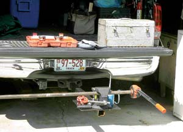

How many times have you been working on a project outside and found yourself wishing you had an extra hand? I was working on a stock well pump and had to make several trips to my shop to cut and thread pipe. But as I used the tailgate of my pickup as a workbench, it occurred to me that a solid vise, mounted on the truck’s trailer hitch, would be a big help. (I have seen trucks for linemen and plumbers that have these welded to the bed, but I didn’t want to weld on a permanent vise.)
I called on the assistance of a friend in a welding at our local technical school. (Vo-tech schools are often looking for projects for their students, be it in welding, HVAC, auto repair or horticulture. Technical schools also can be a good resource and provide a way to recycle old appliances, scrap metal or vehicles.)
After reviewing my idea and scrounging in the school’s scrap pile, we came up with a piece of 48-inch-long, 2-inch-square tubing - long enough to extend past the tailgate. We welded a 1-foot-square piece of quarter-inch plate to one end of the tubing. To this plate, I mounted an inexpensive combination vise using three bolts.
Even though the straight extension is a little low, it is compact and easy to store in the bed of my truck or in the shop. An L-shaped version would bring the vise up to a better working height, but that would take up more space, and I’m planning to use it only when working away from the shop.
|
 JOHN WOODZICK This portable vise slips onto your truck's trailer hitch. |
|
|